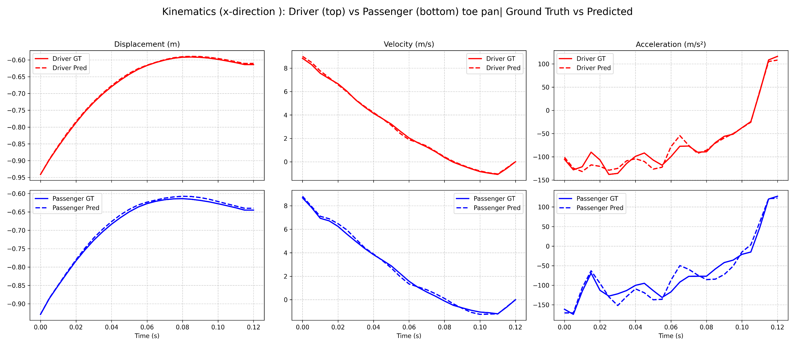

Training AI Physics Models for Transient Structural Mechanics Simulations such as Automotive Crash
Simulating automotive crash is one of the most complex computational workloads in computer-aided engineering (CAE). Crash simulation is a highly non-linear, dynamic event that happens in milliseconds. Therefore automotive crash simulations face significant bottlenecks in both human-driven workflows and raw computational demands. These challenges stem from the need to model highly non-linear, split-second events with extreme accuracy to meet strict regulatory standards (like NHTSA or Euro NCAP).
 Fig 1: Results of commercial crash simulation and predictions from AI surrogate model trained using PhysicsNeMo for vehicle crash dynamics.
Fig 1: Results of commercial crash simulation and predictions from AI surrogate model trained using PhysicsNeMo for vehicle crash dynamics.
Automotive engineers encounter significant challenges when simulating vehicle crashes, such as:
-
Degree of Non-Linearity — Unlike most other engineering simulations, crash is a highly non-linear event. You have geometric non-linearity with parts not just bending but undergoing massive catastrophic deformations, material non-linearity where materials enter their "plastic" regime and also exhibit strain-rate sensitivity, and, last but not least, you have to deal with material fracture (incredibly difficult as it often depends on microscopic manufacturing defects).
-
Complexity of Contact Modeling — During a crash, thousands of car parts interact in milliseconds. The simulation must accurately detect and calculate forces for part-to-part contact (e.g., the engine block hitting the wall or the wheel smashing into the footwell), self-contact (parts folding onto themselves, like the metal of a crush rail crumpling), and finally simulating an airbag that explosively expands in 20–30 milliseconds, requiring complex fluid-structure interaction algorithms to model the gas expanding inside the unfolding cloth.
-
The Time-Step Problem — Crash simulations use explicit time integration solvers, and these solvers must take tiny time steps for simulations to be stable, of the order of microseconds. Simulating just 150 milliseconds of a real crash might require millions of time steps coupled with high-fidelity models with tens of millions of elements, which can take days to run even on massive HPC clusters.
Developing AI surrogates for Crash using PhysicsNeMo
In the last couple of releases, we have published training recipes that enable developers to train AI surrogates to predict the dynamics of structural mechanics problems like deformation and automotive crash. Similar to other AI Physics applications, the automotive crash recipe in PhysicsNeMo showcases the step-by-step methodology for developers to build and test with their own datasets, solvers and modeling experiments with some simple configuration changes.
Data Curation
The input data comes from simulations that entail complex 3D meshes representing vehicle components (bumpers, rails, chassis) and their material properties. In the recipe we showcase the use of PhysicsNeMo Curator, a specialized module to streamline the Extraction, Transformation, and Loading (ETL) of structural mechanics datasets.
- Ingestion: The pipeline reads raw simulation output files (such as d3plot files from LS-DYNA or other Finite Element solvers).
- Transformation: It extracts the "undeformed" mesh geometry (initial state) and the "deformed" mesh geometry (ground truth) over time.
- Formatting: The data is converted into machine-learning-optimized formats like Zarr or other formats like VTP. Zarr is particularly useful for large-scale training because it supports chunked, compressed data storage that is efficiently readable by GPUs.
Choosing the Architecture
The model is trained to predict the spatiotemporal evolution of the mesh. It takes the initial state ($t=0$) and predicts the deformation at subsequent time steps ($t+1$, $t+2$, etc.).
The crash recipe supports multiple advanced architectures specifically designed for AI Physics applications:
-
MeshGraphNet (Graph Neural Networks): This model treats the vehicle mesh as a graph, where nodes represent physical points on the car parts and edges represent connections. The model uses "message passing" to simulate how forces propagate through the structure, predicting how each node moves and deforms based on its neighbors.
-
Transolver (Transformer-based): Adapted from the Transformers that power Large Language Models (LLMs), Transolver handles the spatial dependencies in the crash data. It is particularly effective at capturing global interactions across the vehicle structure that might be missed by local graph connections.
-
GeoTransolver (Transformer-based): An enhanced transformer that builds on Transolver by explicitly incorporating geometric context — learned from multi-scale neighborhoods across the mesh — and injecting it into every layer of the model. This persistent geometric grounding allows the model to stay anchored to the physical domain throughout its forward pass, improving accuracy and robustness compared to standard attention-based approaches. The recipe includes two variants: one using Physics-Attention (the slice-based mechanism from Transolver) and one using FLARE attention.
-
FIGConvUNet (Factorized Implicit Global Convolution UNet): Rather than processing the 3D mesh directly, FIGConvUNet projects the point cloud onto a set of compact 2D implicit grids — one per spatial axis — and performs global convolutions on these factorized representations. This decomposition dramatically reduces computational complexity compared to full 3D convolution, enabling efficient processing of large, high-resolution meshes. A U-Net architecture then integrates multi-scale information across encoder and decoder stages for accurate field prediction.
 Fig 2: The GeoTransolver architecture with FLARE attention.
Fig 2: The GeoTransolver architecture with FLARE attention.
The Training Configuration
The unified training recipe provides the configurations that define the entire training pipeline in YAML configuration files (powered by Hydra). This includes specifying the data reader (Zarr or VTP), the datapipe (point-cloud or graph), the model architecture (MeshGraphNet, Transolver, GeoTransolver, or FigConvUNet), and the training and inference configs. Switching between architectures, readers, datapipes, or temporal schemes is as simple as changing the hydra configs for each run. The pipeline is optimized for NVIDIA GPUs, allowing it to handle the massive memory requirements of large meshes typical in automotive engineering.
A key design decision in crash surrogate modeling is how to handle temporal progression. The recipe provides four strategies, each with different trade-offs:
- One-shot: The model predicts the entire deformation sequence in a single forward pass. Use one-shot when you need fast iteration or have limited compute resources.
- Time-conditional: The model predicts the state at an arbitrary time given the initial condition and a time parameter. Use time-conditional over one-shot when prediction quality during validation matters most.
- Autoregressive with rollout training: The model is trained over multi-step trajectories with backpropagation through time, explicitly learning to correct accumulated errors. Enforces temporal causality but is the most expensive to train.
- Single-step Autoregressive Training: Uses ground-truth states as inputs during training for efficiency, but suffers from covariate shift at inference. Predictions degrade over long rollouts due to error accumulation.
The recipe uses gradient checkpointing during rollout training to keep memory usage manageable across the full time sequence. Training supports multi-GPU distributed execution via PyTorch DDP and mixed-precision (AMP) training.
Validation
The recipe was validated on a Body-in-White (BIW) dataset derived from a public-domain NHTSA vehicle model, simplified to ~400,000 nodes and ~380,000 elements, simulated under a 56 kph frontal crash scenario using a commercial solver. A design of experiments was conducted by varying the thickness of 33 front-end components within ±20% of nominal values, yielding 150 unique designs. The dataset was split 90/5/5 for train/validation/test.
Results show that the overall spatio-temporal deformation trends are captured with reasonable fidelity. Displacement predictions align closely with finite element ground truth throughout the crash sequence. Velocity and acceleration predictions at critical probe points (driver and passenger toe pans) show good quantitative agreement.
 Fig 3: Results of commercial crash simulation and predictions from AI surrogate model trained using GeoTransolver architecture (with FLARE attention) in PhysicsNeMo.
Fig 3: Results of commercial crash simulation and predictions from AI surrogate model trained using GeoTransolver architecture (with FLARE attention) in PhysicsNeMo.

{kind=link}
The recipe also supports other structural mechanics use cases, including modeling bumper beam crash, demonstrating that the same pipeline generalizes to different use cases or structural subassemblies with minimal configuration changes.
 Fig 5: Comparison of simulation and PhysicsNeMo predictions for bumper beam dynamics.
Fig 5: Comparison of simulation and PhysicsNeMo predictions for bumper beam dynamics.
Takeaways
If you are a SciML developer or a Physics AI researcher or an AI practitioner, PhysicsNeMo is a powerful tool in your arsenal to supercharge and extend your PyTorch stack.
Instead of building everything from scratch, you can import PhysicsNeMo modules to develop enterprise-scale Physics AI solutions with unprecedented speed and simplicity. You can use the training recipes to quickly build your first surrogate model and then customize it to your own application.
You can get started easily and step by step using these resources: